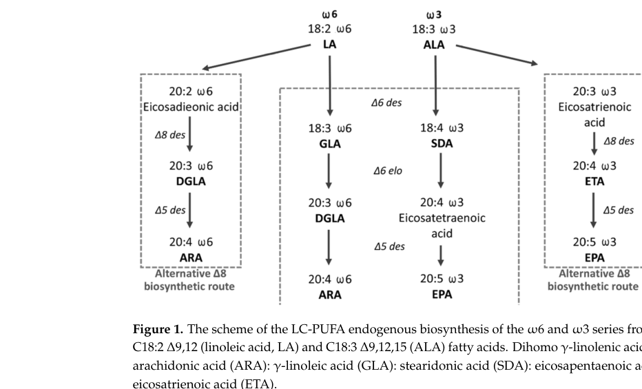
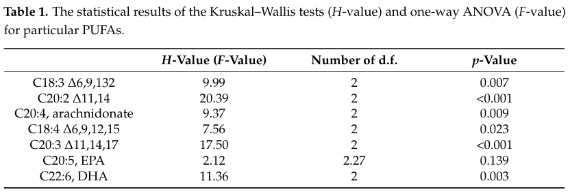

fads2 encodes zebrafish fatty acid desaturase 2, an endoplasmic-reticulum membrane front-end desaturase with bifunctional delta-6 and delta-5 (and in-vivo delta-8) activities in polyunsaturated fatty-acid biosynthesis. Experimental yeast expression confirmed delta-6 desaturation of C18 PUFA (LA to GLA, ALA to SDA) and delta-5 desaturation of C20 PUFA (to ARA and EPA), and the enzyme also acts on C24 substrates to support Sprecher-pathway DHA synthesis. The core function is ER membrane acyl-CoA desaturation for unsaturated fatty-acid biosynthesis; liver-development evidence is retained as a non-core phenotype from a GWAS candidate knockdown screen, and partial knockout additionally impairs female reproduction (egg quality).
| GO Term | Evidence | Action | Reason |
|---|---|---|---|
|
GO:0016020
membrane
|
IBA
GO_REF:0000033 |
MODIFY |
Summary: membrane (GO:0016020) is too general for Fads2; the supported location is the
endoplasmic reticulum membrane. Falcon deep research notes that most biochemical
and review evidence supports Fads2 as an ER membrane enzyme.
Reason: The supported location is endoplasmic reticulum membrane.
Proposed replacements:
endoplasmic reticulum membrane
Supporting Evidence:
file:DANRE/fads2/fads2-uniprot.txt
SUBCELLULAR LOCATION: Endoplasmic reticulum membrane
file:DANRE/fads2/fads2-deep-research-falcon.md
Most biochemical and review evidence supports Fads2 as an **ER membrane** enzyme.
|
|
GO:0005789
endoplasmic reticulum membrane
|
IEA
GO_REF:0000044 |
ACCEPT |
Summary: endoplasmic reticulum membrane (GO:0005789) is supported for Fads2. Falcon deep
research confirms ER localization by co-localization of zebrafish Fads2 with the
ER marker ERp57 and by FRET-detected proximity to its cytochrome b5 reductase
partners (CYB5R2/3) and ELOVL elongases in an ER lipid-synthetic module. A
mitochondrial membrane signal was also reported in a heterologous HeLa system
but is interpreted cautiously as a possible overexpression/cell-type artifact.
Reason: Fads2 is an ER membrane fatty acid desaturase, corroborated by ERp57 co-localization and proximity to ER reductase/elongase partners.
Supporting Evidence:
file:DANRE/fads2/fads2-uniprot.txt
SUBCELLULAR LOCATION: Endoplasmic reticulum membrane
file:DANRE/fads2/fads2-deep-research-falcon.md
Co-localization with an ER marker (ERp57) supports ER association.
file:DANRE/fads2/fads2-deep-research-falcon.md
the ER association and proximity to reductases/elongases is strongly supported
|
|
GO:0006629
lipid metabolic process
|
IEA
GO_REF:0000002 |
MODIFY |
Summary: lipid metabolic process (GO:0006629) is too broad for the Fads2 pathway role.
The specific supported biological process is unsaturated/polyunsaturated
fatty-acid biosynthesis. Falcon deep research describes Fads2 as the key
desaturase in endogenous LC-PUFA biosynthesis, linking dietary C18 essential
fatty acids (LA/ALA) to ARA, EPA, and DHA production.
Reason: The specific supported biological process is unsaturated/polyunsaturated fatty-acid biosynthesis.
Proposed replacements:
unsaturated fatty acid biosynthetic process
Supporting Evidence:
file:DANRE/fads2/fads2-uniprot.txt
PATHWAY: Lipid metabolism; polyunsaturated fatty acid biosynthesis.
file:DANRE/fads2/fads2-deep-research-falcon.md
Catalyzes early and mid-pathway steps converting dietary **LA/ALA** into longer-chain PUFA intermediates and ultimately supporting **ARA/EPA** production and **DHA** synthesis via a Sprecher-like route.
|
|
GO:0016213
acyl-CoA 6-desaturase activity
|
IEA
GO_REF:0000120 |
ACCEPT |
Summary: acyl-CoA 6-desaturase activity (GO:0016213) is supported for Fads2. Falcon
deep research confirms the seminal yeast heterologous-expression study
directly demonstrated Delta-6 desaturation of C18 PUFA (18:2n-6 to 18:3n-6;
18:3n-3 to 18:4n-3) with GC-MS-validated products, with the Delta-6 step being
the rate-limiting first step of LC-PUFA biosynthesis.
Reason: Delta-6/acyl-CoA desaturase activity is a central, experimentally validated biochemical function of Fads2.
Supporting Evidence:
file:DANRE/fads2/fads2-uniprot.txt
Fatty acid desaturase with bifunctional delta-5 and delta-6
file:DANRE/fads2/fads2-uniprot.txt
biosynthesis of polyunsaturated fatty acids
file:DANRE/fads2/fads2-deep-research-falcon.md
The seminal yeast heterologous expression study demonstrated that zebrafish Fads2 catalyzes:
file:DANRE/fads2/fads2-deep-research-falcon.md
introduces a double bond at the 6th carbon from the carboxyl end and is commonly the **rate-limiting first step** for converting dietary essential PUFA precursors into longer-chain PUFA.
|
|
GO:0016491
oxidoreductase activity
|
IEA
GO_REF:0000002 |
MODIFY |
Summary: oxidoreductase activity (GO:0016491) is too broad for Fads2. The molecular
function is better represented by the specific acyl-CoA desaturase activities.
Falcon deep research confirms zebrafish Fads2 is a non-heme diiron front-end
desaturase that receives electrons via the NADH-cytochrome b5 reductase /
cytochrome b5 system and uses molecular oxygen during double-bond insertion,
and that the enzyme is bifunctional with both Delta-6 and Delta-5 activities.
Reason: The molecular function should be represented by the specific acyl-CoA desaturase activities.
Proposed replacements:
acyl-CoA 6-desaturase activity
acyl-CoA (8-3)-desaturase activity
Supporting Evidence:
file:DANRE/fads2/fads2-uniprot.txt
Fatty acid desaturase with bifunctional delta-5 and delta-6
file:DANRE/fads2/fads2-uniprot.txt
biosynthesis of polyunsaturated fatty acids
file:DANRE/fads2/fads2-deep-research-falcon.md
Front-end desaturases are non-heme diiron enzymes that require an electron-transfer chain involving **NADH–cytochrome b5 reductase**, **cytochrome b5**, and the desaturase, using **molecular oxygen** during double-bond insertion.
|
|
GO:0062076
acyl-CoA (8-3)-desaturase activity
|
IEA
GO_REF:0000120 |
ACCEPT |
Summary: acyl-CoA (8-3)-desaturase activity (GO:0062076) is supported for Fads2 and
captures the Delta-5 / Delta-8 side of this bifunctional enzyme. Falcon deep
research shows the original yeast assay directly demonstrated Delta-5
desaturation of C20 PUFA (20:3n-6 to 20:4n-6 / arachidonic acid; 20:4n-3 to
20:5n-3 / EPA) with GC-MS-validated products, and that partial in-vivo knockout
reroutes synthesis through an alternative Delta-8 desaturation pathway, so the
enzyme behaves as Delta-6/Delta-5/Delta-8 in the in-vivo pathway context.
Reason: UniProt lists this specific desaturase activity as part of the Fads2 catalytic repertoire, and falcon deep research corroborates the Delta-5 (C20 to ARA/EPA) and in-vivo Delta-8 activities of the bifunctional zebrafish enzyme.
Supporting Evidence:
file:DANRE/fads2/fads2-uniprot.txt
Fatty acid desaturase with bifunctional delta-5 and delta-6
file:DANRE/fads2/fads2-uniprot.txt
biosynthesis of polyunsaturated fatty acids
file:DANRE/fads2/fads2-deep-research-falcon.md
Zebrafish are a canonical example: they carry a single **bifunctional Δ6/Δ5 Fads2** that supports multiple LC-PUFA biosynthetic steps.
file:DANRE/fads2/fads2-deep-research-falcon.md
The authors interpret this as evidence that zebrafish Fads2 behaves as **Δ6/Δ5/Δ8** within the in vivo pathway context.
|
|
GO:0006636
unsaturated fatty acid biosynthetic process
|
IEA
GO_REF:0000041 |
ACCEPT |
Summary: unsaturated fatty acid biosynthetic process (GO:0006636) is supported for Fads2.
Falcon deep research confirms zebrafish Fads2 is the key desaturase in
endogenous LC-PUFA biosynthesis, with experimentally validated production of
C18 (GLA/SDA) and C20 (ARA/EPA) intermediates and participation in the Sprecher
pathway for DHA via Delta-6 desaturation of C24 substrates.
Reason: Fads2 acts in polyunsaturated fatty-acid biosynthesis.
Supporting Evidence:
file:DANRE/fads2/fads2-uniprot.txt
PATHWAY: Lipid metabolism; polyunsaturated fatty acid biosynthesis.
file:DANRE/fads2/fads2-deep-research-falcon.md
These findings support that zebrafish Fads2 can participate in the C24 Δ6 step required for Sprecher-pathway DHA biosynthesis.
|
|
GO:0001889
liver development
|
IMP
PMID:23813869 Functional validation of GWAS gene candidates for abnormal l... |
KEEP AS NON CORE |
Summary: liver development (GO:0001889) is supported as a knockdown-screen phenotype but
is not the core molecular role. The direct conserved function is fatty-acid
desaturation in PUFA biosynthesis; liver development is a downstream/organismal
phenotype. Falcon deep research reinforces that the best-characterized in-vivo
loss-of-function phenotype is reproductive: partial CRISPR disruption of fads2 in
adult females altered egg LC-PUFA composition and produced poor-quality eggs,
consistent with fads2 acting as a metabolic enzyme whose organismal phenotypes
(liver, reproduction) are secondary to its desaturase activity.
Reason: The direct conserved function is fatty-acid desaturation in PUFA biosynthesis; liver development is a downstream or organismal phenotype.
Supporting Evidence:
PMID:23813869
function of gene candidates during liver development
PMID:23813869
smaller livers at 72 hpf
file:DANRE/fads2/fads2-deep-research-falcon.md
Partial CRISPR disruption of fads2 in adult females altered egg LC-PUFA signatures and was associated with **poor-quality eggs**, consistent with a requirement for properly balanced LC-PUFA production/availability during oogenesis and egg provisioning.
|
The research report should be a detailed narrative explaining the function, biological processes, and localization of the gene product. Citations should be given for all claims.
You should prioritize authoritative reviews and primary scientific literature when conducting research. You can supplement
this with annotations you find in gene/protein databases, but these can be outdated or inaccurate.
We are specifically interested in the primary function of the gene - for enzymes, what reaction is catalyzed, and what is the substrate specificity? For transporters, what is the substrate? For structural proteins or adapters, what is the broader structural role? For signaling molecules, what is the role in the pathway.
We are interested in where in or outside the cell the gene product carries out its function.
We are also interested in the signaling or biochemical pathways in which the gene functions. We are less interested in broad pleiotropic effects, except where these elucidate the precise role.
Include evidence where possible. We are interested in both experimental evidence as well as inference from structure, evolution, or bioinformatic analysis. Precise studies should be prioritized over high-throughput, where available.
The target protein is Danio rerio fads2 (UniProt Q9DEX7), historically cloned and functionally validated as a bifunctional front-end desaturase with Δ6 and Δ5 activities in zebrafish. This aligns with the UniProt description (acyl-CoA 6-desaturase / “Δ5/Δ6 fatty acid desaturase”) and with canonical domain architecture (N-terminal cytochrome b5-like domain and conserved histidine boxes). The foundational functional characterization is the zebrafish cDNA expressed in yeast that catalyzes both Δ6 and Δ5 desaturation steps of PUFA biosynthesis. (hastings2001avertebratefatty pages 1-2, hastings2001avertebratefatty pages 4-6)
“Front-end” desaturases insert double bonds counted from the carboxyl end of the fatty acid. Thus:
- Δ6 desaturation introduces a double bond at the 6th carbon from the carboxyl end and is commonly the rate-limiting first step for converting dietary essential PUFA precursors into longer-chain PUFA. (lee2016fattyaciddesaturases pages 3-5, blahova2020assessmentoffatty pages 3-5)
- Δ5 desaturation introduces a double bond at the 5th carbon and typically converts C20 intermediates (e.g., DGLA/ETA analogs) to arachidonic acid (ARA) and eicosapentaenoic acid (EPA). (lee2016fattyaciddesaturases pages 3-5, hastings2001avertebratefatty pages 4-6)
- Δ8 desaturation can occur in an “alternative pathway” in which elongation precedes desaturation (elongate C18→C20, then Δ8 desaturate), providing a bypass around the first Δ6 step. (blahova2020assessmentoffatty pages 3-5, blahova2022partialfads2gene pages 1-2)
LC-PUFA (≥C20) such as ARA (20:4n-6), EPA (20:5n-3), and DHA (22:6n-3) are produced by alternating desaturation and elongation steps. In vertebrates:
- The “Δ6 pathway” proceeds as Δ6 desaturation → elongation → Δ5 desaturation. (blahova2020assessmentoffatty pages 3-5)
- The “Δ8 pathway” proceeds as elongation → Δ8 desaturation → Δ5 desaturation. (blahova2020assessmentoffatty pages 3-5)
For DHA, teleosts frequently use the Sprecher pathway: EPA is elongated to C24 PUFA, then Δ6 desaturation on C24 generates 24:6n-3, followed by peroxisomal β-oxidation back to DHA. (oboh2017twoalternativepathways pages 1-2, blahova2020assessmentoffatty pages 3-5)
Teleost genomes often lack a canonical Fads1 (Δ5) ortholog, and Fads2 enzymes diversify to cover multiple desaturation steps (Δ6, Δ5, Δ8, and in some species Δ4). Zebrafish are a canonical example: they carry a single bifunctional Δ6/Δ5 Fads2 that supports multiple LC-PUFA biosynthetic steps. (blahova2020assessmentoffatty pages 3-5, castro2012functionaldesaturasefads1 pages 2-4)
The seminal yeast heterologous expression study demonstrated that zebrafish Fads2 catalyzes:
- Δ6 desaturation of C18 PUFA
- 18:2n-6 (linoleic acid, LA) → 18:3n-6 (γ-linolenic acid, GLA)
- 18:3n-3 (α-linolenic acid, ALA) → 18:4n-3 (stearidonic acid, SDA)
- Δ5 desaturation of C20 PUFA
- 20:3n-6 → 20:4n-6 (arachidonic acid, ARA)
- 20:4n-3 → 20:5n-3 (eicosapentaenoic acid, EPA)
with product identities validated by GC-MS. (hastings2001avertebratefatty pages 2-4, hastings2001avertebratefatty pages 4-6)
In yeast assays, conversion efficiencies indicated a preference for n-3 substrates compared with n-6 analogs:
- Δ6 conversions: 11.7% (18:2n-6→18:3n-6) vs 29.4% (18:3n-3→18:4n-3)
- Δ5 conversions: 8.3% (20:3n-6→20:4n-6) vs 20.4% (20:4n-3→20:5n-3)
These quantitative data support the interpretation that zebrafish Fads2 has stronger activity toward the n-3 pathway substrates in this assay context. (hastings2001avertebratefatty pages 4-6)
A broader comparative teleost functional survey reported zebrafish Δ6Δ5 Fads2 Δ6 activity toward C24 substrates:
- 24:4n-6 → 24:5n-6: 10.4%
- 24:5n-3 → 24:6n-3: 15.8%
with an internal normalization metric (Δ24:5n−3/Δcontrol) of 1.33 (control Δ6 activity on 18:3n-3 = 11.9%). These findings support that zebrafish Fads2 can participate in the C24 Δ6 step required for Sprecher-pathway DHA biosynthesis. (oboh2017twoalternativepathways pages 2-4)
CRISPR/Cas9 partial knockout (“crispant”) zebrafish females (reported editing levels ~50–80%) showed altered egg LC-PUFA profiles consistent with impaired Δ6 entry steps (LA→GLA and ALA→SDA) and diversion through an alternative Δ8 pathway (elongation to C20 intermediates then Δ8 desaturation). The authors interpret this as evidence that zebrafish Fads2 behaves as Δ6/Δ5/Δ8 within the in vivo pathway context. (blahova2022partialfads2gene pages 1-2, blahova2022partialfads2gene pages 2-4)
Zebrafish Fads2 is a membrane-associated desaturase with:
- N-terminal cytochrome b5-like domain (with conserved heme-binding motif HPGG)
- Three conserved histidine boxes, typical of membrane diiron desaturases
- Predicted multiple membrane-spanning helices typical of microsomal/ER desaturases
The original cloning study reported a 1,590 bp ORF encoding a 444 aa protein and explicitly highlighted cytochrome b5-like and histidine-box features. (hastings2001avertebratefatty pages 2-4, hastings2001avertebratefatty pages 4-6)
Front-end desaturases are non-heme diiron enzymes that require an electron-transfer chain involving NADH–cytochrome b5 reductase, cytochrome b5, and the desaturase, using molecular oxygen during double-bond insertion. Fish Fads2 are described as ER membrane proteins with histidine motifs coordinating the catalytic diiron center. (oboh2018investigatingthelongchain pages 35-39, blahova2020assessmentoffatty pages 5-7)
Cell-based imaging and FRET experiments in HeLa cells expressing zebrafish Fads2 (Z-FADS) provide direct localization and interaction evidence:
- Co-localization with an ER marker (ERp57) supports ER association.
- Detection in mitochondrial membrane fractions and co-localization with a mitochondrial marker (COX IV) suggests additional mitochondrial membrane presence in this heterologous system.
- FRET-based proximity/interaction was observed with CYB5R2/3 and multiple elongases (ELOVL2/4/5/7). (chen2013identificationofthe pages 4-5, chen2013identificationofthe pages 2-4)
Quantitative interaction metrics reported include (selected examples):
- Z-FADS-EGFP + DsRed-CYB5R2: FRET efficiency 16 ± 1%, distance 8.4 nm
- Z-FADS-EGFP + DsRed-CYB5R3: 6.0 ± 0.5%, distance 9.9 nm
- EGFP-Z-FADS + ELOVL5-FLAG: 17 ± 3%, distance 7.8 nm
These data support a model in which Fads2 functionally co-localizes with and physically associates with reductases/elongases in an ER lipid-synthetic module. (chen2013identificationofthe pages 2-4)
Partial CRISPR disruption of fads2 in adult females altered egg LC-PUFA signatures and was associated with poor-quality eggs, consistent with a requirement for properly balanced LC-PUFA production/availability during oogenesis and egg provisioning. The study explicitly centers on a shift in pathway usage (Δ6 entry impairment and Δ8 bypass) and its reproductive consequence. (blahova2022partialfads2gene pages 1-2, blahova2022partialfads2gene media 0bbea25d, blahova2022partialfads2gene media 073b0d4a)
Recent primary zebrafish studies commonly treat fads2 expression as a marker/effector within broader lipogenesis and metabolic state changes:
- Vitamin D receptor paralog ablation (vdra/vdrb double KO): authors describe fads2 as a “key enzyme in PUFA biosynthesis” and present tissue-specific qPCR panels showing altered lipogenesis gene transcription including fads2 in liver and adipose tissue in mutants. (liu2023enhancedinsulinactivity pages 6-8)
- Impaired glucose uptake (glut2 KO): decreased expression of fatty-acid synthesis genes including fads2 was reported in MZglut2 zebrafish, accompanying growth retardation and broader metabolic remodeling. (xi2023attenuatedglucoseuptake pages 1-2)
- Androgen signaling blockade: flutamide treatment and ar-related models produced increased lipid accumulation and upregulation of lipogenesis-related genes including fads2 in liver (RNA-seq/qPCR-referenced panels). Quantitatively, in ar-/- comparisons the authors reported whole-body lipid content differences and provided sample sizes for lipid-content assays; fads2 is explicitly listed among upregulated DNL/lipogenesis genes in the flutamide condition. (jia2024androgensignalinginhibits pages 7-10)
- Tobacco pollutant/cigarette smoke extract (CSE) exposure: integrated transcriptomics implicated downregulation of fads2 as part of lipid-metabolism disturbance in embryos; the authors argue this may reduce LC-PUFA availability required for normal embryogenesis and tissue differentiation. (chen2024integratedmrnaand pages 9-12, chen2024integratedmrnaand pages 12-13)
Collectively, these studies reinforce fads2 as a mechanistically plausible node linking endocrine signals, nutritional/chemical stressors, and lipid metabolic outcomes, though many do not directly quantify specific lipid species downstream of Fads2.
A major practical driver is the limited global supply of dietary LC-PUFA (notably DHA/EPA) and the need for aquaculture species to maintain health and human nutritional value under increasing use of plant-based feeds. Fish Fads2 enzymes are therefore major targets for nutritional programming and genetic engineering to enhance endogenous LC-PUFA capacity. (blahova2020assessmentoffatty pages 1-3, blahova2020assessmentoffatty pages 7-9)
A 2024 review on genome editing targets for desirable aquaculture phenotypes identifies fads2 (and specific Δ6-related mutant alleles) as targets affecting fatty-acid composition in fish meat, highlighting translational interest in manipulating this pathway. (orlova2024insearchof pages 1-2)
Based on direct enzymology and pathway context, the best-supported primary annotation for zebrafish Q9DEX7 is:
- Microsomal/ER-associated front-end PUFA desaturase with Δ6 and Δ5 activities (and evidence of Δ8 participation under pathway perturbation).
- Catalyzes early and mid-pathway steps converting dietary LA/ALA into longer-chain PUFA intermediates and ultimately supporting ARA/EPA production and DHA synthesis via a Sprecher-like route.
This annotation is anchored in direct yeast conversion assays (substrate→product with quantified conversions) and reinforced by comparative teleost assays for C24 substrates and by in vivo gene editing perturbation outcomes. (hastings2001avertebratefatty pages 4-6, oboh2017twoalternativepathways pages 2-4, blahova2022partialfads2gene pages 1-2)
Most biochemical and review evidence supports Fads2 as an ER membrane enzyme. The reported mitochondrial presence in a heterologous HeLa system should be interpreted cautiously as it may reflect cell-type-specific targeting or overexpression artifacts rather than the dominant in vivo localization in zebrafish tissues; however, the ER association and proximity to reductases/elongases is strongly supported. (chen2013identificationofthe pages 4-5, blahova2020assessmentoffatty pages 5-7)
The following table consolidates the enzyme’s activities, pathway role, localization, phenotypes, and application relevance.
| Aspect | Key findings | Evidence/notes with specific numeric values where available | Primary citation context IDs |
|---|---|---|---|
| Enzyme activity | Zebrafish fads2 encodes a bifunctional front-end desaturase with Δ6 and Δ5 activities; later in vivo work supports an alternative Δ8 route consistent with trifunctional behavior in pathway context. | In yeast, zebrafish Fads2 converted C18 PUFA by Δ6 desaturation and C20 PUFA by Δ5 desaturation; crispant data support diversion through a Δ8 bypass when Δ6 function is impaired. Reviews place zebrafish among teleosts where Fads2 diversified after loss of canonical teleost fads1. (hastings2001avertebratefatty pages 4-6, blahova2022partialfads2gene pages 1-2, blahova2020assessmentoffatty pages 3-5, lee2016fattyaciddesaturases pages 3-5) | (hastings2001avertebratefatty pages 4-6, blahova2022partialfads2gene pages 1-2, blahova2020assessmentoffatty pages 3-5, lee2016fattyaciddesaturases pages 3-5) |
| Substrates/products (Δ6) | Primary Δ6 substrates are 18:2n-6 (LA) and 18:3n-3 (ALA), yielding 18:3n-6 (GLA) and 18:4n-3 (SDA). | Hastings et al. showed 18:2n-6 → 18:3n-6 at 11.7% conversion and 18:3n-3 → 18:4n-3 at 29.4% conversion in yeast, indicating stronger activity toward the n-3 substrate. Δ6 desaturation is described as the first/rate-limiting step in LC-PUFA biosynthesis. (hastings2001avertebratefatty pages 4-6, hastings2001avertebratefatty pages 1-2, blahova2020assessmentoffatty pages 3-5, lee2016fattyaciddesaturases pages 3-5) | (hastings2001avertebratefatty pages 4-6, hastings2001avertebratefatty pages 1-2, blahova2020assessmentoffatty pages 3-5, lee2016fattyaciddesaturases pages 3-5) |
| Substrates/products (Δ5) | Zebrafish Fads2 also desaturates C20 intermediates at the Δ5 position to generate ARA and EPA. | Hastings et al. measured 20:3n-6 → 20:4n-6 (ARA) at 8.3% conversion and 20:4n-3 → 20:5n-3 (EPA) at 20.4% conversion, again showing preference for n-3 substrate. (hastings2001avertebratefatty pages 4-6, hastings2001avertebratefatty pages 2-4) | (hastings2001avertebratefatty pages 4-6, hastings2001avertebratefatty pages 2-4) |
| C24 substrate activity / DHA route | Zebrafish Δ6Δ5 Fads2 can also act on C24 PUFA, supporting the Sprecher pathway for DHA biosynthesis. | In the Oboh et al. teleost survey, zebrafish DrΔ6Δ5Fads2 converted 24:4n-6 → 24:5n-6 at 10.4% and 24:5n-3 → 24:6n-3 at 15.8%; the Δ24:5n-3/Δcontrol ratio was 1.33, with 18:3n-3 control conversion 11.9%. (oboh2017twoalternativepathways pages 2-4, oboh2017twoalternativepathways pages 1-2) | (oboh2017twoalternativepathways pages 2-4, oboh2017twoalternativepathways pages 1-2) |
| Δ8 pathway relevance | When fads2 function is partially disrupted in vivo, zebrafish LC-PUFA synthesis can be rerouted through an alternative Δ8 pathway. | Bláhová et al. interpret crispant egg lipid profiles as showing elongation of C18 precursors to 20:2n-6 (EDA) and 20:3n-3 (ERA) followed by Fads2-mediated Δ8 desaturation, bypassing the first Δ6 step. This supports the claim that zebrafish Fads2 behaves as Δ6/Δ5/Δ8 in vivo pathway context. (blahova2022partialfads2gene pages 1-2, blahova2022partialfads2gene pages 2-4, blahova2022partialfads2gene pages 11-13) | (blahova2022partialfads2gene pages 1-2, blahova2022partialfads2gene pages 2-4, blahova2022partialfads2gene pages 11-13) |
| Pathway role | fads2 is the key desaturase in endogenous LC-PUFA biosynthesis, linking dietary C18 essential fatty acids to ARA, EPA, and DHA production. | Reviews describe two major routes: Δ6 pathway (Δ6 desaturation → elongation → Δ5 desaturation) and Δ8 pathway (elongation → Δ8 desaturation → Δ5 desaturation). DHA can then be produced by the Sprecher pathway via 24:5n-3 → 24:6n-3 and peroxisomal β-oxidation, or by a direct Δ4 route in some other teleosts; zebrafish is aligned with the Sprecher-capable group. (blahova2020assessmentoffatty pages 3-5, oboh2017twoalternativepathways pages 1-2, blahova2020assessmentoffatty pages 1-3) | (blahova2020assessmentoffatty pages 3-5, oboh2017twoalternativepathways pages 1-2, blahova2020assessmentoffatty pages 1-3) |
| Localization | Zebrafish Fads2 is primarily associated with the endoplasmic reticulum (ER), with additional evidence for mitochondrial membrane localization in transfected cells. | Chen et al. reported ER co-localization (with ERp57) and mitochondrial co-localization (with COX IV), plus Western-blot detection in the mitochondrial membrane fraction of HeLa cells expressing zebrafish Fads2. Reviews also describe Fads2 as an ER membrane-bound enzyme. (chen2013identificationofthe pages 4-5, chen2013identificationofthe pages 1-2, blahova2020assessmentoffatty pages 1-3, blahova2020assessmentoffatty pages 7-9) | (chen2013identificationofthe pages 4-5, chen2013identificationofthe pages 1-2, blahova2020assessmentoffatty pages 1-3, blahova2020assessmentoffatty pages 7-9) |
| Protein interactions | Fads2 functions within an ER lipid-biosynthetic complex with CYB5R2/CYB5R3 and multiple ELOVL elongases. | Chen et al. measured donor-acceptor distances of 95 Å to CYB5R2 and 93 Å to CYB5R3. Reported FRET efficiencies with elongases were 13 ± 1% (ELOVL2), 11 ± 0% (ELOVL4), and 7.8 ± 0.6% (ELOVL5); Fads2 was also in proximity to ELOVL7. (chen2013identificationofthe pages 4-5, chen2013identificationofthe pages 1-2) | (chen2013identificationofthe pages 4-5, chen2013identificationofthe pages 1-2) |
| Structure/domains | The protein architecture matches UniProt Q9DEX7: N-terminal cytochrome b5-like domain, conserved HPGG heme-binding motif, three histidine boxes, and multiple membrane-spanning helices. | Hastings reported a 1,590-bp ORF encoding a 444-aa protein. Reviews describe Fads2 as a modular, membrane-bound desaturase with a fused cytochrome b5-like domain and a C-terminal desaturase region containing three conserved His-boxes; topology models predict up to four transmembrane α-helices in ER membrane association. (hastings2001avertebratefatty pages 2-4, blahova2020assessmentoffatty pages 5-7, blahova2020assessmentoffatty pages 7-9) | (hastings2001avertebratefatty pages 2-4, blahova2020assessmentoffatty pages 5-7, blahova2020assessmentoffatty pages 7-9) |
| Catalytic mechanism | Fads2 is a non-heme diiron front-end desaturase that receives electrons through the cytochrome b5 system. | Mechanistic reviews describe electron transfer from NADH → NADH-cytochrome b5 reductase → cytochrome b5 / fused cytochrome b5-like domain → diiron center, with molecular oxygen used during double-bond insertion. Chen et al. likewise described zebrafish Fads2 as a non-heme diiron desaturase requiring the heme-binding cytochrome b5 motif. (oboh2018investigatingthelongchain pages 35-39, blahova2020assessmentoffatty pages 5-7, chen2013identificationofthe pages 1-2) | (oboh2018investigatingthelongchain pages 35-39, blahova2020assessmentoffatty pages 5-7, chen2013identificationofthe pages 1-2) |
| Phenotypes upon editing | Partial loss of fads2 impairs female reproductive output through altered egg LC-PUFA composition and poor egg quality. | Bláhová et al. generated G0 CRISPR/Cas9 crispants with ~50–80% editing and found impaired conversion of LA→GLA and ALA→SDA, altered egg LC-PUFA profiles, evidence of Δ8 bypass, and bad-quality eggs in edited females. Figure/table evidence in that paper centers on egg fatty-acid ratios and significant composition shifts. (blahova2022partialfads2gene pages 1-2, blahova2022partialfads2gene pages 2-4, blahova2022partialfads2gene media e18e2aaf) | (blahova2022partialfads2gene pages 1-2, blahova2022partialfads2gene pages 2-4, blahova2022partialfads2gene media e18e2aaf) |
| Key quantitative data summary | Available quantitative data show stronger activity toward n-3 substrates and measurable action on both C18/C20 and C24 PUFA. | Percent conversions reported: 11.7% (18:2n-6→18:3n-6), 29.4% (18:3n-3→18:4n-3), 8.3% (20:3n-6→20:4n-6), 20.4% (20:4n-3→20:5n-3), 10.4% (24:4n-6→24:5n-6), 15.8% (24:5n-3→24:6n-3), control 11.9%, ratio 1.33; editing efficiency in vivo 50–80%. (hastings2001avertebratefatty pages 4-6, oboh2017twoalternativepathways pages 2-4, blahova2022partialfads2gene pages 1-2) | (hastings2001avertebratefatty pages 4-6, oboh2017twoalternativepathways pages 2-4, blahova2022partialfads2gene pages 1-2) |
| Applications / engineering | fads2 is considered a promising genome-editing target for modifying fish fatty-acid composition and improving aquaculture value. | A 2024 review lists fads2 and related Δ6 mutant alleles among targets affecting fatty-acid composition in fish meat. A broader review highlights promoter engineering, copy-number effects, and transgenesis, including evidence that heterologous Δ5 Fads2 can function in zebrafish and that LC-PUFA biosynthesis can be increased by engineering pathway genes. (orlova2024insearchof pages 1-2, blahova2020assessmentoffatty pages 7-9) | (orlova2024insearchof pages 1-2, blahova2020assessmentoffatty pages 7-9) |
Table: This table summarizes the functional annotation of zebrafish Danio rerio fads2 (UniProt Q9DEX7), including enzymatic activities, pathways, localization, structure, phenotypes, and engineering relevance. It compiles quantitative findings from primary studies and review-level context useful for gene function interpretation.
Primary zebrafish functional characterization:
- Hastings N. et al. “A vertebrate fatty acid desaturase with Δ5 and Δ6 activities.” PNAS (Published 2001-11). https://doi.org/10.1073/pnas.251516598 (hastings2001avertebratefatty pages 4-6)
Subcellular localization and interaction module:
- Chen Y-S. et al. “Identification of the proteins required for fatty acid desaturation in zebrafish (Danio rerio).” Biochemical and Biophysical Research Communications (Published 2013-11). https://doi.org/10.1016/j.bbrc.2013.09.127 (chen2013identificationofthe pages 2-4)
In vivo perturbation of fads2 and Δ8 bypass evidence:
- Bláhová Z. et al. “Partial fads2 Gene Knockout Diverts LC-PUFA Biosynthesis via an Alternative Δ8 Pathway with an Impact on the Reproduction of Female Zebrafish (Danio rerio).” Genes (Published 2022-04). https://doi.org/10.3390/genes13040700 (blahova2022partialfads2gene pages 1-2)
Teleost comparative evidence for Sprecher-pathway enabling Δ6-on-C24 activity:
- Oboh A. et al. “Two alternative pathways for docosahexaenoic acid (DHA, 22:6n-3) biosynthesis are widespread among teleost fish.” Scientific Reports (Published 2017-06). https://doi.org/10.1038/s41598-017-04288-2 (oboh2017twoalternativepathways pages 2-4)
Authoritative conceptual reviews:
- Lee J.M. et al. “Fatty Acid Desaturases, Polyunsaturated Fatty Acid Regulation, and Biotechnological Advances.” Nutrients (Published 2016-01). https://doi.org/10.3390/nu8010023 (lee2016fattyaciddesaturases pages 3-5)
- Bláhová Z. et al. “Assessment of Fatty Acid Desaturase (Fads2) Structure-Function Properties in Fish…” Biomolecules (preprint/review posted 2020-01). https://doi.org/10.20944/preprints202001.0330.v1 (blahova2020assessmentoffatty pages 5-7)
Recent (2023–2024) zebrafish systems studies implicating fads2 in lipid metabolic state:
- Liu R. et al. “Enhanced insulin activity achieved in VDRa/b ablation zebrafish.” Frontiers in Endocrinology (Published 2023-02). https://doi.org/10.3389/fendo.2023.1054665 (liu2023enhancedinsulinactivity pages 6-8)
- Xi L. et al. “Attenuated glucose uptake promotes catabolic metabolism…” Frontiers in Nutrition (Published 2023-05). https://doi.org/10.3389/fnut.2023.1187283 (xi2023attenuatedglucoseuptake pages 1-2)
- Jia J-Y. et al. “Androgen signaling inhibits de novo lipogenesis to alleviate lipid deposition in zebrafish.” Zoological Research (Published 2024-03). https://doi.org/10.24272/j.issn.2095-8137.2023.324 (jia2024androgensignalinginhibits pages 7-10)
- Chen J. et al. “Integrated mRNA- and miRNA-sequencing analyses unveil…” Journal of Translational Medicine (Published 2024-03). https://doi.org/10.1186/s12967-024-05050-9 (chen2024integratedmrnaand pages 9-12)
Aquaculture genome-editing perspective:
- Orlova S.Y. et al. “In Search of a Target Gene for a Desirable Phenotype in Aquaculture…” Genes (Published 2024-06). https://doi.org/10.3390/genes15060726 (orlova2024insearchof pages 1-2)
References
(hastings2001avertebratefatty pages 1-2): Nicola Hastings, Morris Agaba, Douglas R. Tocher, Michael J. Leaver, James R. Dick, John R. Sargent, and Alan J. Teale. A vertebrate fatty acid desaturase with δ5 and δ6 activities. Proceedings of the National Academy of Sciences of the United States of America, 98:14304-14309, Nov 2001. URL: https://doi.org/10.1073/pnas.251516598, doi:10.1073/pnas.251516598. This article has 492 citations and is from a highest quality peer-reviewed journal.
(hastings2001avertebratefatty pages 4-6): Nicola Hastings, Morris Agaba, Douglas R. Tocher, Michael J. Leaver, James R. Dick, John R. Sargent, and Alan J. Teale. A vertebrate fatty acid desaturase with δ5 and δ6 activities. Proceedings of the National Academy of Sciences of the United States of America, 98:14304-14309, Nov 2001. URL: https://doi.org/10.1073/pnas.251516598, doi:10.1073/pnas.251516598. This article has 492 citations and is from a highest quality peer-reviewed journal.
(lee2016fattyaciddesaturases pages 3-5): Je Min Lee, Hyungjae Lee, SeokBeom Kang, and W. Park. Fatty acid desaturases, polyunsaturated fatty acid regulation, and biotechnological advances. Nutrients, 8:23, Jan 2016. URL: https://doi.org/10.3390/nu8010023, doi:10.3390/nu8010023. This article has 525 citations.
(blahova2020assessmentoffatty pages 3-5): Zuzana Bláhová, Thomas Nelson Harvey, Martin Pšenička, and Jan Mráz. Assessment of fatty acid desaturase (fads2) structure-function properties in fish in the context of environmental adaptations and as a target for genetic engineering. Biomolecules, Jan 2020. URL: https://doi.org/10.20944/preprints202001.0330.v1, doi:10.20944/preprints202001.0330.v1. This article has 48 citations.
(blahova2022partialfads2gene pages 1-2): Zuzana Bláhová, Roman Franěk, Marek Let, Martin Bláha, Martin Pšenička, and Jan Mráz. Partial fads2 gene knockout diverts lc-pufa biosynthesis via an alternative δ8 pathway with an impact on the reproduction of female zebrafish (danio rerio). Genes, 13:700, Apr 2022. URL: https://doi.org/10.3390/genes13040700, doi:10.3390/genes13040700. This article has 8 citations.
(oboh2017twoalternativepathways pages 1-2): Angela Oboh, Naoki Kabeya, Greta Carmona-Antoñanzas, L. Filipe C. Castro, James R. Dick, Douglas R. Tocher, and Oscar Monroig. Two alternative pathways for docosahexaenoic acid (dha, 22:6n-3) biosynthesis are widespread among teleost fish. Scientific Reports, Jun 2017. URL: https://doi.org/10.1038/s41598-017-04288-2, doi:10.1038/s41598-017-04288-2. This article has 173 citations and is from a peer-reviewed journal.
(castro2012functionaldesaturasefads1 pages 2-4): Luís Filipe Costa Castro, Óscar Monroig, Michael J. Leaver, Jonathan Wilson, Isabel Cunha, and Douglas R. Tocher. Functional desaturase fads1 (δ5) and fads2 (δ6) orthologues evolved before the origin of jawed vertebrates. PLoS ONE, 7:e31950, Feb 2012. URL: https://doi.org/10.1371/journal.pone.0031950, doi:10.1371/journal.pone.0031950. This article has 186 citations and is from a peer-reviewed journal.
(hastings2001avertebratefatty pages 2-4): Nicola Hastings, Morris Agaba, Douglas R. Tocher, Michael J. Leaver, James R. Dick, John R. Sargent, and Alan J. Teale. A vertebrate fatty acid desaturase with δ5 and δ6 activities. Proceedings of the National Academy of Sciences of the United States of America, 98:14304-14309, Nov 2001. URL: https://doi.org/10.1073/pnas.251516598, doi:10.1073/pnas.251516598. This article has 492 citations and is from a highest quality peer-reviewed journal.
(oboh2017twoalternativepathways pages 2-4): Angela Oboh, Naoki Kabeya, Greta Carmona-Antoñanzas, L. Filipe C. Castro, James R. Dick, Douglas R. Tocher, and Oscar Monroig. Two alternative pathways for docosahexaenoic acid (dha, 22:6n-3) biosynthesis are widespread among teleost fish. Scientific Reports, Jun 2017. URL: https://doi.org/10.1038/s41598-017-04288-2, doi:10.1038/s41598-017-04288-2. This article has 173 citations and is from a peer-reviewed journal.
(blahova2022partialfads2gene pages 2-4): Zuzana Bláhová, Roman Franěk, Marek Let, Martin Bláha, Martin Pšenička, and Jan Mráz. Partial fads2 gene knockout diverts lc-pufa biosynthesis via an alternative δ8 pathway with an impact on the reproduction of female zebrafish (danio rerio). Genes, 13:700, Apr 2022. URL: https://doi.org/10.3390/genes13040700, doi:10.3390/genes13040700. This article has 8 citations.
(oboh2018investigatingthelongchain pages 35-39): A Oboh. Investigating the long-chain polyunsaturated fatty acid biosynthesis of the african catfish clarias gariepinus (burchell, 1822). Unknown journal, 2018.
(blahova2020assessmentoffatty pages 5-7): Zuzana Bláhová, Thomas Nelson Harvey, Martin Pšenička, and Jan Mráz. Assessment of fatty acid desaturase (fads2) structure-function properties in fish in the context of environmental adaptations and as a target for genetic engineering. Biomolecules, Jan 2020. URL: https://doi.org/10.20944/preprints202001.0330.v1, doi:10.20944/preprints202001.0330.v1. This article has 48 citations.
(chen2013identificationofthe pages 4-5): Yao-Sheng Chen, Wen-I Luo, Tsu-Lin Lee, Steve S.-F. Yu, and Chi-Yao Chang. Identification of the proteins required for fatty acid desaturation in zebrafish (danio rerio). Biochemical and biophysical research communications, 440 4:671-6, Nov 2013. URL: https://doi.org/10.1016/j.bbrc.2013.09.127, doi:10.1016/j.bbrc.2013.09.127. This article has 11 citations and is from a peer-reviewed journal.
(chen2013identificationofthe pages 2-4): Yao-Sheng Chen, Wen-I Luo, Tsu-Lin Lee, Steve S.-F. Yu, and Chi-Yao Chang. Identification of the proteins required for fatty acid desaturation in zebrafish (danio rerio). Biochemical and biophysical research communications, 440 4:671-6, Nov 2013. URL: https://doi.org/10.1016/j.bbrc.2013.09.127, doi:10.1016/j.bbrc.2013.09.127. This article has 11 citations and is from a peer-reviewed journal.
(blahova2022partialfads2gene media 0bbea25d): Zuzana Bláhová, Roman Franěk, Marek Let, Martin Bláha, Martin Pšenička, and Jan Mráz. Partial fads2 gene knockout diverts lc-pufa biosynthesis via an alternative δ8 pathway with an impact on the reproduction of female zebrafish (danio rerio). Genes, 13:700, Apr 2022. URL: https://doi.org/10.3390/genes13040700, doi:10.3390/genes13040700. This article has 8 citations.
(blahova2022partialfads2gene media 073b0d4a): Zuzana Bláhová, Roman Franěk, Marek Let, Martin Bláha, Martin Pšenička, and Jan Mráz. Partial fads2 gene knockout diverts lc-pufa biosynthesis via an alternative δ8 pathway with an impact on the reproduction of female zebrafish (danio rerio). Genes, 13:700, Apr 2022. URL: https://doi.org/10.3390/genes13040700, doi:10.3390/genes13040700. This article has 8 citations.
(liu2023enhancedinsulinactivity pages 6-8): Ruolan Liu, Yao Lu, Xuyan Peng, Jingyi Jia, Yonglin Ruan, Shengchi Shi, Tingting Shu, Tianhui Li, Xia Jin, Gang Zhai, Jiangyan He, Qiyong Lou, and Zhan Yin. Enhanced insulin activity achieved in vdra/b ablation zebrafish. Frontiers in Endocrinology, Feb 2023. URL: https://doi.org/10.3389/fendo.2023.1054665, doi:10.3389/fendo.2023.1054665. This article has 10 citations.
(xi2023attenuatedglucoseuptake pages 1-2): Longwei Xi, Gang Zhai, Yulong Liu, Yulong Gong, Qisheng Lu, Zhimin Zhang, Haokun Liu, Junyan Jin, Xiaoming Zhu, Zhan Yin, Shouqi Xie, and Dong Han. Attenuated glucose uptake promotes catabolic metabolism through activated ampk signaling and impaired insulin signaling in zebrafish. Frontiers in Nutrition, May 2023. URL: https://doi.org/10.3389/fnut.2023.1187283, doi:10.3389/fnut.2023.1187283. This article has 13 citations.
(jia2024androgensignalinginhibits pages 7-10): Jing-Yi Jia, Guang-Hui Chen, Ting-Ting Shu, Qi-Yong Lou, Xia Jin, Jiang-Yan He, Wu-Han Xiao, Gang Zhai, and Zhan Yin. Androgen signaling inhibits de novo lipogenesis to alleviate lipid deposition in zebrafish. Zoological Research, 45:355-366, Mar 2024. URL: https://doi.org/10.24272/j.issn.2095-8137.2023.324, doi:10.24272/j.issn.2095-8137.2023.324. This article has 9 citations.
(chen2024integratedmrnaand pages 9-12): Jiasheng Chen, Yuxin Lin, Deyi Gen, Wanxian Chen, Rui Han, Hao Li, Shijie Tang, Shukai Zheng, and Xiaoping Zhong. Integrated mrna- and mirna-sequencing analyses unveil the underlying mechanism of tobacco pollutant-induced developmental toxicity in zebrafish embryos. Journal of Translational Medicine, Mar 2024. URL: https://doi.org/10.1186/s12967-024-05050-9, doi:10.1186/s12967-024-05050-9. This article has 4 citations and is from a peer-reviewed journal.
(chen2024integratedmrnaand pages 12-13): Jiasheng Chen, Yuxin Lin, Deyi Gen, Wanxian Chen, Rui Han, Hao Li, Shijie Tang, Shukai Zheng, and Xiaoping Zhong. Integrated mrna- and mirna-sequencing analyses unveil the underlying mechanism of tobacco pollutant-induced developmental toxicity in zebrafish embryos. Journal of Translational Medicine, Mar 2024. URL: https://doi.org/10.1186/s12967-024-05050-9, doi:10.1186/s12967-024-05050-9. This article has 4 citations and is from a peer-reviewed journal.
(blahova2020assessmentoffatty pages 1-3): Zuzana Bláhová, Thomas Nelson Harvey, Martin Pšenička, and Jan Mráz. Assessment of fatty acid desaturase (fads2) structure-function properties in fish in the context of environmental adaptations and as a target for genetic engineering. Biomolecules, Jan 2020. URL: https://doi.org/10.20944/preprints202001.0330.v1, doi:10.20944/preprints202001.0330.v1. This article has 48 citations.
(blahova2020assessmentoffatty pages 7-9): Zuzana Bláhová, Thomas Nelson Harvey, Martin Pšenička, and Jan Mráz. Assessment of fatty acid desaturase (fads2) structure-function properties in fish in the context of environmental adaptations and as a target for genetic engineering. Biomolecules, Jan 2020. URL: https://doi.org/10.20944/preprints202001.0330.v1, doi:10.20944/preprints202001.0330.v1. This article has 48 citations.
(orlova2024insearchof pages 1-2): Svetlana Yu. Orlova, Maria N. Ruzina, Olga R. Emelianova, Alexey A. Sergeev, Evgeniya A. Chikurova, Alexei M. Orlov, and Nikolai S. Mugue. In search of a target gene for a desirable phenotype in aquaculture: genome editing of cyprinidae and salmonidae species. Genes, 15:726, Jun 2024. URL: https://doi.org/10.3390/genes15060726, doi:10.3390/genes15060726. This article has 13 citations.
(blahova2022partialfads2gene pages 11-13): Zuzana Bláhová, Roman Franěk, Marek Let, Martin Bláha, Martin Pšenička, and Jan Mráz. Partial fads2 gene knockout diverts lc-pufa biosynthesis via an alternative δ8 pathway with an impact on the reproduction of female zebrafish (danio rerio). Genes, 13:700, Apr 2022. URL: https://doi.org/10.3390/genes13040700, doi:10.3390/genes13040700. This article has 8 citations.
(chen2013identificationofthe pages 1-2): Yao-Sheng Chen, Wen-I Luo, Tsu-Lin Lee, Steve S.-F. Yu, and Chi-Yao Chang. Identification of the proteins required for fatty acid desaturation in zebrafish (danio rerio). Biochemical and biophysical research communications, 440 4:671-6, Nov 2013. URL: https://doi.org/10.1016/j.bbrc.2013.09.127, doi:10.1016/j.bbrc.2013.09.127. This article has 11 citations and is from a peer-reviewed journal.
(blahova2022partialfads2gene media e18e2aaf): Zuzana Bláhová, Roman Franěk, Marek Let, Martin Bláha, Martin Pšenička, and Jan Mráz. Partial fads2 gene knockout diverts lc-pufa biosynthesis via an alternative δ8 pathway with an impact on the reproduction of female zebrafish (danio rerio). Genes, 13:700, Apr 2022. URL: https://doi.org/10.3390/genes13040700, doi:10.3390/genes13040700. This article has 8 citations.
(blahova2022partialfads2gene media 15c2f8b8): Zuzana Bláhová, Roman Franěk, Marek Let, Martin Bláha, Martin Pšenička, and Jan Mráz. Partial fads2 gene knockout diverts lc-pufa biosynthesis via an alternative δ8 pathway with an impact on the reproduction of female zebrafish (danio rerio). Genes, 13:700, Apr 2022. URL: https://doi.org/10.3390/genes13040700, doi:10.3390/genes13040700. This article has 8 citations.


id: Q9DEX7
gene_symbol: fads2
product_type: PROTEIN
status: DRAFT
taxon:
id: NCBITaxon:7955
label: Danio rerio
description: fads2 encodes zebrafish fatty acid desaturase 2, an endoplasmic-reticulum membrane front-end desaturase with
bifunctional delta-6 and delta-5 (and in-vivo delta-8) activities in polyunsaturated fatty-acid biosynthesis. Experimental
yeast expression confirmed delta-6 desaturation of C18 PUFA (LA to GLA, ALA to SDA) and delta-5 desaturation of C20 PUFA
(to ARA and EPA), and the enzyme also acts on C24 substrates to support Sprecher-pathway DHA synthesis. The core function is
ER membrane acyl-CoA desaturation for unsaturated fatty-acid biosynthesis; liver-development evidence is retained as a
non-core phenotype from a GWAS candidate knockdown screen, and partial knockout additionally impairs female reproduction
(egg quality).
existing_annotations:
- term:
id: GO:0016020
label: membrane
evidence_type: IBA
original_reference_id: GO_REF:0000033
review:
summary: |
membrane (GO:0016020) is too general for Fads2; the supported location is the
endoplasmic reticulum membrane. Falcon deep research notes that most biochemical
and review evidence supports Fads2 as an ER membrane enzyme.
action: MODIFY
reason: The supported location is endoplasmic reticulum membrane.
proposed_replacement_terms:
- id: GO:0005789
label: endoplasmic reticulum membrane
additional_reference_ids:
- file:DANRE/fads2/fads2-deep-research-falcon.md
supported_by:
- reference_id: file:DANRE/fads2/fads2-uniprot.txt
supporting_text: 'SUBCELLULAR LOCATION: Endoplasmic reticulum membrane'
- reference_id: file:DANRE/fads2/fads2-deep-research-falcon.md
supporting_text: |-
Most biochemical and review evidence supports Fads2 as an **ER membrane** enzyme.
- term:
id: GO:0005789
label: endoplasmic reticulum membrane
evidence_type: IEA
original_reference_id: GO_REF:0000044
review:
summary: |
endoplasmic reticulum membrane (GO:0005789) is supported for Fads2. Falcon deep
research confirms ER localization by co-localization of zebrafish Fads2 with the
ER marker ERp57 and by FRET-detected proximity to its cytochrome b5 reductase
partners (CYB5R2/3) and ELOVL elongases in an ER lipid-synthetic module. A
mitochondrial membrane signal was also reported in a heterologous HeLa system
but is interpreted cautiously as a possible overexpression/cell-type artifact.
action: ACCEPT
reason: Fads2 is an ER membrane fatty acid desaturase, corroborated by ERp57
co-localization and proximity to ER reductase/elongase partners.
additional_reference_ids:
- file:DANRE/fads2/fads2-deep-research-falcon.md
supported_by:
- reference_id: file:DANRE/fads2/fads2-uniprot.txt
supporting_text: 'SUBCELLULAR LOCATION: Endoplasmic reticulum membrane'
- reference_id: file:DANRE/fads2/fads2-deep-research-falcon.md
supporting_text: |-
Co-localization with an ER marker (ERp57) supports ER association.
- reference_id: file:DANRE/fads2/fads2-deep-research-falcon.md
supporting_text: |-
the ER association and proximity to reductases/elongases is strongly supported
- term:
id: GO:0006629
label: lipid metabolic process
evidence_type: IEA
original_reference_id: GO_REF:0000002
review:
summary: |
lipid metabolic process (GO:0006629) is too broad for the Fads2 pathway role.
The specific supported biological process is unsaturated/polyunsaturated
fatty-acid biosynthesis. Falcon deep research describes Fads2 as the key
desaturase in endogenous LC-PUFA biosynthesis, linking dietary C18 essential
fatty acids (LA/ALA) to ARA, EPA, and DHA production.
action: MODIFY
reason: The specific supported biological process is unsaturated/polyunsaturated fatty-acid biosynthesis.
proposed_replacement_terms:
- id: GO:0006636
label: unsaturated fatty acid biosynthetic process
additional_reference_ids:
- file:DANRE/fads2/fads2-deep-research-falcon.md
supported_by:
- reference_id: file:DANRE/fads2/fads2-uniprot.txt
supporting_text: 'PATHWAY: Lipid metabolism; polyunsaturated fatty acid biosynthesis.'
- reference_id: file:DANRE/fads2/fads2-deep-research-falcon.md
supporting_text: |-
Catalyzes early and mid-pathway steps converting dietary **LA/ALA** into longer-chain PUFA intermediates and ultimately supporting **ARA/EPA** production and **DHA** synthesis via a Sprecher-like route.
- term:
id: GO:0016213
label: acyl-CoA 6-desaturase activity
evidence_type: IEA
original_reference_id: GO_REF:0000120
review:
summary: |
acyl-CoA 6-desaturase activity (GO:0016213) is supported for Fads2. Falcon
deep research confirms the seminal yeast heterologous-expression study
directly demonstrated Delta-6 desaturation of C18 PUFA (18:2n-6 to 18:3n-6;
18:3n-3 to 18:4n-3) with GC-MS-validated products, with the Delta-6 step being
the rate-limiting first step of LC-PUFA biosynthesis.
action: ACCEPT
reason: Delta-6/acyl-CoA desaturase activity is a central, experimentally validated
biochemical function of Fads2.
additional_reference_ids:
- file:DANRE/fads2/fads2-deep-research-falcon.md
supported_by:
- reference_id: file:DANRE/fads2/fads2-uniprot.txt
supporting_text: Fatty acid desaturase with bifunctional delta-5 and delta-6
- reference_id: file:DANRE/fads2/fads2-uniprot.txt
supporting_text: biosynthesis of polyunsaturated fatty acids
- reference_id: file:DANRE/fads2/fads2-deep-research-falcon.md
supporting_text: |-
The seminal yeast heterologous expression study demonstrated that zebrafish Fads2 catalyzes:
- reference_id: file:DANRE/fads2/fads2-deep-research-falcon.md
supporting_text: |-
introduces a double bond at the 6th carbon from the carboxyl end and is commonly the **rate-limiting first step** for converting dietary essential PUFA precursors into longer-chain PUFA.
- term:
id: GO:0016491
label: oxidoreductase activity
evidence_type: IEA
original_reference_id: GO_REF:0000002
review:
summary: |
oxidoreductase activity (GO:0016491) is too broad for Fads2. The molecular
function is better represented by the specific acyl-CoA desaturase activities.
Falcon deep research confirms zebrafish Fads2 is a non-heme diiron front-end
desaturase that receives electrons via the NADH-cytochrome b5 reductase /
cytochrome b5 system and uses molecular oxygen during double-bond insertion,
and that the enzyme is bifunctional with both Delta-6 and Delta-5 activities.
action: MODIFY
reason: The molecular function should be represented by the specific acyl-CoA desaturase activities.
proposed_replacement_terms:
- id: GO:0016213
label: acyl-CoA 6-desaturase activity
- id: GO:0062076
label: acyl-CoA (8-3)-desaturase activity
additional_reference_ids:
- file:DANRE/fads2/fads2-deep-research-falcon.md
supported_by:
- reference_id: file:DANRE/fads2/fads2-uniprot.txt
supporting_text: Fatty acid desaturase with bifunctional delta-5 and delta-6
- reference_id: file:DANRE/fads2/fads2-uniprot.txt
supporting_text: biosynthesis of polyunsaturated fatty acids
- reference_id: file:DANRE/fads2/fads2-deep-research-falcon.md
supporting_text: |-
Front-end desaturases are non-heme diiron enzymes that require an electron-transfer chain involving **NADH–cytochrome b5 reductase**, **cytochrome b5**, and the desaturase, using **molecular oxygen** during double-bond insertion.
- term:
id: GO:0062076
label: acyl-CoA (8-3)-desaturase activity
evidence_type: IEA
original_reference_id: GO_REF:0000120
review:
summary: |
acyl-CoA (8-3)-desaturase activity (GO:0062076) is supported for Fads2 and
captures the Delta-5 / Delta-8 side of this bifunctional enzyme. Falcon deep
research shows the original yeast assay directly demonstrated Delta-5
desaturation of C20 PUFA (20:3n-6 to 20:4n-6 / arachidonic acid; 20:4n-3 to
20:5n-3 / EPA) with GC-MS-validated products, and that partial in-vivo knockout
reroutes synthesis through an alternative Delta-8 desaturation pathway, so the
enzyme behaves as Delta-6/Delta-5/Delta-8 in the in-vivo pathway context.
action: ACCEPT
reason: UniProt lists this specific desaturase activity as part of the Fads2 catalytic
repertoire, and falcon deep research corroborates the Delta-5 (C20 to ARA/EPA) and
in-vivo Delta-8 activities of the bifunctional zebrafish enzyme.
additional_reference_ids:
- file:DANRE/fads2/fads2-deep-research-falcon.md
supported_by:
- reference_id: file:DANRE/fads2/fads2-uniprot.txt
supporting_text: Fatty acid desaturase with bifunctional delta-5 and delta-6
- reference_id: file:DANRE/fads2/fads2-uniprot.txt
supporting_text: biosynthesis of polyunsaturated fatty acids
- reference_id: file:DANRE/fads2/fads2-deep-research-falcon.md
supporting_text: |-
Zebrafish are a canonical example: they carry a single **bifunctional Δ6/Δ5 Fads2** that supports multiple LC-PUFA biosynthetic steps.
- reference_id: file:DANRE/fads2/fads2-deep-research-falcon.md
supporting_text: |-
The authors interpret this as evidence that zebrafish Fads2 behaves as **Δ6/Δ5/Δ8** within the in vivo pathway context.
- term:
id: GO:0006636
label: unsaturated fatty acid biosynthetic process
evidence_type: IEA
original_reference_id: GO_REF:0000041
review:
summary: |
unsaturated fatty acid biosynthetic process (GO:0006636) is supported for Fads2.
Falcon deep research confirms zebrafish Fads2 is the key desaturase in
endogenous LC-PUFA biosynthesis, with experimentally validated production of
C18 (GLA/SDA) and C20 (ARA/EPA) intermediates and participation in the Sprecher
pathway for DHA via Delta-6 desaturation of C24 substrates.
action: ACCEPT
reason: Fads2 acts in polyunsaturated fatty-acid biosynthesis.
additional_reference_ids:
- file:DANRE/fads2/fads2-deep-research-falcon.md
supported_by:
- reference_id: file:DANRE/fads2/fads2-uniprot.txt
supporting_text: 'PATHWAY: Lipid metabolism; polyunsaturated fatty acid biosynthesis.'
- reference_id: file:DANRE/fads2/fads2-deep-research-falcon.md
supporting_text: |-
These findings support that zebrafish Fads2 can participate in the C24 Δ6 step required for Sprecher-pathway DHA biosynthesis.
- term:
id: GO:0001889
label: liver development
evidence_type: IMP
original_reference_id: PMID:23813869
review:
summary: |
liver development (GO:0001889) is supported as a knockdown-screen phenotype but
is not the core molecular role. The direct conserved function is fatty-acid
desaturation in PUFA biosynthesis; liver development is a downstream/organismal
phenotype. Falcon deep research reinforces that the best-characterized in-vivo
loss-of-function phenotype is reproductive: partial CRISPR disruption of fads2 in
adult females altered egg LC-PUFA composition and produced poor-quality eggs,
consistent with fads2 acting as a metabolic enzyme whose organismal phenotypes
(liver, reproduction) are secondary to its desaturase activity.
action: KEEP_AS_NON_CORE
reason: The direct conserved function is fatty-acid desaturation in PUFA biosynthesis; liver development is a downstream
or organismal phenotype.
additional_reference_ids:
- file:DANRE/fads2/fads2-deep-research-falcon.md
supported_by:
- reference_id: PMID:23813869
supporting_text: function of gene candidates during liver development
- reference_id: PMID:23813869
supporting_text: smaller livers at 72 hpf
- reference_id: file:DANRE/fads2/fads2-deep-research-falcon.md
supporting_text: |-
Partial CRISPR disruption of fads2 in adult females altered egg LC-PUFA signatures and was associated with **poor-quality eggs**, consistent with a requirement for properly balanced LC-PUFA production/availability during oogenesis and egg provisioning.
references:
- id: GO_REF:0000002
title: Gene Ontology annotation through association of InterPro records with GO terms
findings: []
- id: GO_REF:0000033
title: Annotation inferences using phylogenetic trees
findings: []
- id: GO_REF:0000041
title: Gene Ontology annotation based on UniPathway vocabulary mapping.
findings: []
- id: GO_REF:0000044
title: Gene Ontology annotation based on UniProtKB/Swiss-Prot Subcellular Location vocabulary mapping, accompanied by conservative
changes to GO terms applied by UniProt
findings: []
- id: GO_REF:0000120
title: Combined Automated Annotation using Multiple IEA Methods
findings: []
- id: PMID:23813869
title: Functional validation of GWAS gene candidates for abnormal liver function during zebrafish liver development.
findings:
- statement: The GWAS candidate screen tested zebrafish knockdown effects on liver development.
supporting_text: function of gene candidates during liver development
- statement: The screen reported smaller livers for multiple candidate-gene knockdowns, including fads2 context.
supporting_text: smaller livers at 72 hpf
- id: file:DANRE/fads2/fads2-uniprot.txt
title: UniProtKB entry Q9DEX7 for Danio rerio fads2
findings:
- statement: UniProt describes Fads2 as an ER membrane delta-5/delta-6 fatty acid desaturase in PUFA biosynthesis.
supporting_text: Fatty acid desaturase with bifunctional delta-5 and delta-6
- id: file:DANRE/fads2/fads2-deep-research-falcon.md
title: Falcon deep research report on Danio rerio fads2 (Q9DEX7)
findings:
- statement: |
Zebrafish fads2 is a bifunctional front-end desaturase with both Delta-6 and
Delta-5 activities, validated by heterologous expression in yeast.
supporting_text: |-
The target protein is *Danio rerio* **fads2** (UniProt Q9DEX7), historically cloned and functionally validated as a **bifunctional front-end desaturase** with **Δ6 and Δ5** activities in zebrafish.
reference_section_type: RESULTS
- statement: |
The yeast assay directly demonstrated Delta-6 desaturation of C18 PUFA and
Delta-5 desaturation of C20 PUFA, with products validated by GC-MS.
supporting_text: |-
The seminal yeast heterologous expression study demonstrated that zebrafish Fads2 catalyzes:
reference_section_type: RESULTS
- statement: |
Delta-6 desaturation of C18 PUFA is the rate-limiting first step in converting
dietary essential PUFA precursors into longer-chain PUFA.
supporting_text: |-
introduces a double bond at the 6th carbon from the carboxyl end and is commonly the **rate-limiting first step** for converting dietary essential PUFA precursors into longer-chain PUFA.
reference_section_type: RESULTS
- statement: |
Delta-5 desaturation converts C20 intermediates to arachidonic acid (ARA) and
eicosapentaenoic acid (EPA).
supporting_text: |-
introduces a double bond at the 5th carbon and typically converts C20 intermediates (e.g., DGLA/ETA analogs) to **arachidonic acid (ARA)** and **eicosapentaenoic acid (EPA)**.
reference_section_type: RESULTS
- statement: |
Teleosts often lack a canonical Fads1 (Delta-5) ortholog; zebrafish carry a
single bifunctional Delta-6/Delta-5 Fads2 covering multiple desaturation steps.
supporting_text: |-
Zebrafish are a canonical example: they carry a single **bifunctional Δ6/Δ5 Fads2** that supports multiple LC-PUFA biosynthetic steps.
reference_section_type: RESULTS
- statement: |
Zebrafish Fads2 can act on C24 PUFA, supporting the Sprecher pathway for DHA
biosynthesis (Delta-6 desaturation of C24 followed by peroxisomal beta-oxidation).
supporting_text: |-
These findings support that zebrafish Fads2 can participate in the C24 Δ6 step required for Sprecher-pathway DHA biosynthesis.
reference_section_type: RESULTS
- statement: |
Partial in-vivo CRISPR knockout reroutes LC-PUFA synthesis through an
alternative Delta-8 pathway, so the enzyme behaves as Delta-6/Delta-5/Delta-8
in the in-vivo pathway context.
supporting_text: |-
The authors interpret this as evidence that zebrafish Fads2 behaves as **Δ6/Δ5/Δ8** within the in vivo pathway context.
reference_section_type: RESULTS
- statement: |
Fads2 is a non-heme diiron front-end desaturase using the NADH-cytochrome b5
reductase / cytochrome b5 electron-transfer chain and molecular oxygen for
double-bond insertion.
supporting_text: |-
Front-end desaturases are non-heme diiron enzymes that require an electron-transfer chain involving **NADH–cytochrome b5 reductase**, **cytochrome b5**, and the desaturase, using **molecular oxygen** during double-bond insertion.
reference_section_type: DISCUSSION
- statement: |
Zebrafish Fads2 co-localizes with the ER marker ERp57 and is in FRET proximity
to CYB5R2/3 reductases and ELOVL elongases in an ER lipid-synthetic module.
supporting_text: |-
Co-localization with an ER marker (ERp57) supports ER association.
reference_section_type: RESULTS
- statement: |
Most biochemical and review evidence supports Fads2 as an ER membrane enzyme;
a mitochondrial signal seen in heterologous HeLa cells is interpreted cautiously.
supporting_text: |-
Most biochemical and review evidence supports Fads2 as an **ER membrane** enzyme.
reference_section_type: DISCUSSION
- statement: |
Partial CRISPR disruption of fads2 in adult female zebrafish altered egg
LC-PUFA composition and produced poor-quality eggs, affecting reproduction.
supporting_text: |-
Partial CRISPR disruption of fads2 in adult females altered egg LC-PUFA signatures and was associated with **poor-quality eggs**, consistent with a requirement for properly balanced LC-PUFA production/availability during oogenesis and egg provisioning.
reference_section_type: RESULTS
core_functions:
- description: fads2 enables endoplasmic-reticulum membrane acyl-CoA desaturase activity, including delta-6 and acyl-CoA (8-3)-desaturase
activities, supporting unsaturated/polyunsaturated fatty-acid biosynthesis.
molecular_function:
id: GO:0016213
label: acyl-CoA 6-desaturase activity
directly_involved_in:
- id: GO:0006636
label: unsaturated fatty acid biosynthetic process
locations:
- id: GO:0005789
label: endoplasmic reticulum membrane
supported_by:
- reference_id: file:DANRE/fads2/fads2-uniprot.txt
supporting_text: Fatty acid desaturase with bifunctional delta-5 and delta-6
- reference_id: file:DANRE/fads2/fads2-uniprot.txt
supporting_text: 'PATHWAY: Lipid metabolism; polyunsaturated fatty acid biosynthesis.'
- reference_id: file:DANRE/fads2/fads2-uniprot.txt
supporting_text: 'SUBCELLULAR LOCATION: Endoplasmic reticulum membrane'
- reference_id: file:DANRE/fads2/fads2-deep-research-falcon.md
supporting_text: |-
introduces a double bond at the 6th carbon from the carboxyl end and is commonly the **rate-limiting first step** for converting dietary essential PUFA precursors into longer-chain PUFA.
- description: fads2 also enables endoplasmic-reticulum membrane acyl-CoA (8-3)-desaturase activity, corresponding to its
delta-5-like activity on longer-chain PUFA substrates in polyunsaturated fatty-acid biosynthesis.
molecular_function:
id: GO:0062076
label: acyl-CoA (8-3)-desaturase activity
directly_involved_in:
- id: GO:0006636
label: unsaturated fatty acid biosynthetic process
locations:
- id: GO:0005789
label: endoplasmic reticulum membrane
supported_by:
- reference_id: file:DANRE/fads2/fads2-uniprot.txt
supporting_text: Fatty acid desaturase with bifunctional delta-5 and delta-6
- reference_id: file:DANRE/fads2/fads2-uniprot.txt
supporting_text: Reaction=(8Z,11Z,14Z,17Z)-eicosatetraenoyl-CoA
- reference_id: file:DANRE/fads2/fads2-uniprot.txt
supporting_text: 'SUBCELLULAR LOCATION: Endoplasmic reticulum membrane'
- reference_id: file:DANRE/fads2/fads2-deep-research-falcon.md
supporting_text: |-
The authors interpret this as evidence that zebrafish Fads2 behaves as **Δ6/Δ5/Δ8** within the in vivo pathway context.
{kind=link}
{kind=link}